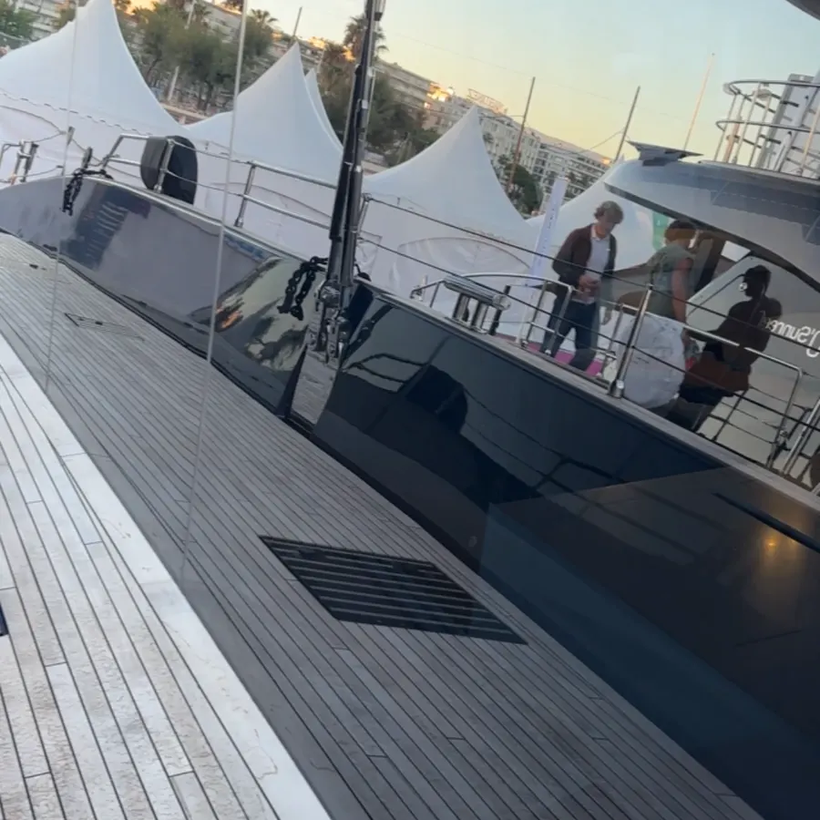

Éligible crédit d'impôt −50 %*
Vitres, vérandas & baies
Fenêtres, baies vitrées, portes-fenêtres, Velux, vérandas. Technique professionnelle mouilleur + raclette et eau déminéralisée : un rendu sans trace, même en plein soleil, que les produits du commerce n'égalent pas.
- Intérieur & extérieur, grandes hauteurs
- Produits 100 % écologiques, fabriqués en France
- Résultat garanti : pas satisfait, on revient sans frais